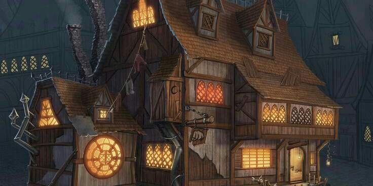
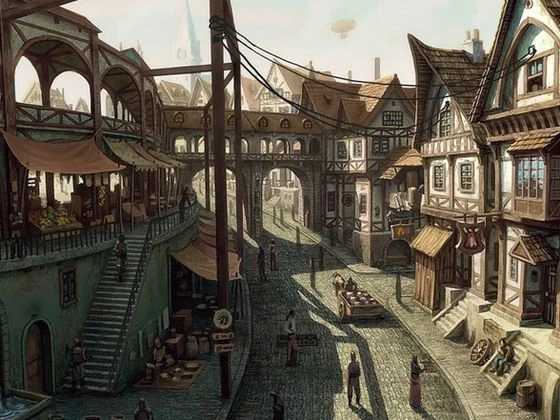

narrador:você se encontra em uma pequena taverna nos suborbios de Hiryen, conhecida com Toicinho de Porko, percebendo que não resta ninguém na taverna você decide sair de lá para seguir com sua vida
narrador:saindo da taverna você percebe o quão bela é a taverna por fora, por mais que esteja nos suborbios é um lugar bem cuidado
narrador:você caminha pelos suborbios com calma e percebe o quão movimentada estava Hyrem hoje